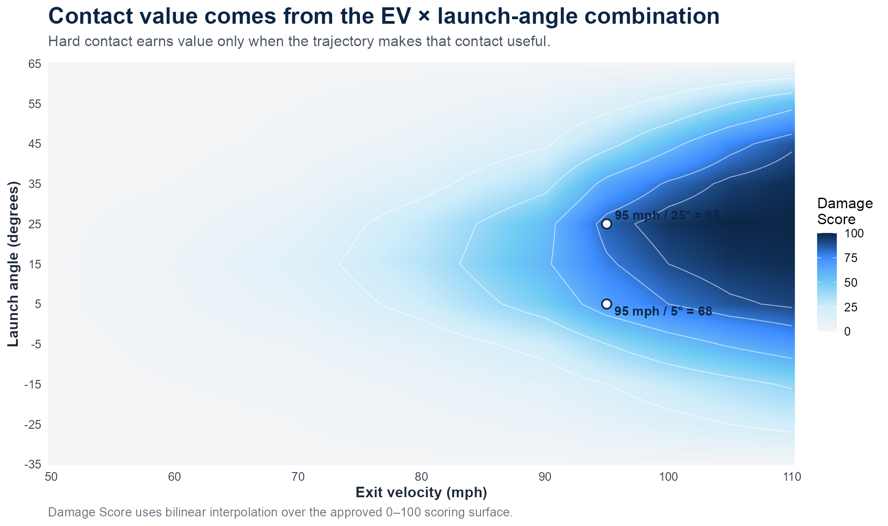
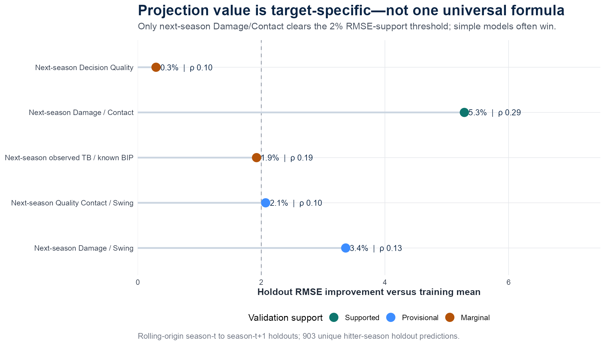
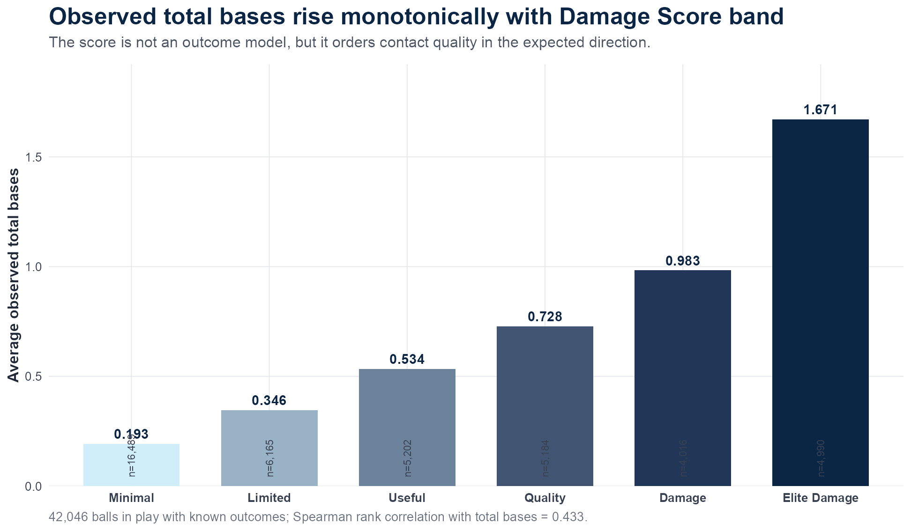

Baseball analytics / hitter development
Hitter Damage & Swing Efficiency
An R and Python system for grading how efficiently hitters turn swing opportunities into valuable contact.
SportsForce project context
- MLB pipeline
- About 1.25 million raw 2025 and 2026 Statcast pitches
- MLB benchmark
- 673 completed-2025 hitter-season profiles
- College validation
- Rolling-origin, season-forward holdouts
Model purpose
How efficiently does a hitter turn opportunities into damage?
I built the pitch-level scoring, data pipelines, player summaries, validation checks, and reporting workflow.
The model separates contact value from swing decisions, then adds pitch type, velocity, location, count, two-strike, spray, and adjustability context.
College and MLB reference populations remain separate. Percentiles and 20–80 grades appear only when their component-specific sample requirements are met.
Scoring
Exit velocity and launch angle are scored together.
Damage Score is a transparent 0–100 surface. A 95 mph ball at 25 degrees receives more value than the same exit velocity at five degrees because the trajectory changes the likely contact value.

Validation
The validation did not support one universal projection model.
Every test season is predicted only from earlier seasons. In this college holdout set, next-season Damage per Contact improved RMSE by 5.3% over the training mean with a .29 rank correlation across 188 holdout pairs. The other targets were classified as provisional or marginal.


Interpretation: the score orders contact quality in the expected direction, but that does not make it a complete outcome model.
Status: the dashboard runs locally in R Shiny. The MLB grades describe current process; they are not future projected grades.
Outputs
What a scouting report contains
- ContactDamage per swing, damage per contact, contact quality, exit velocity, and launch-angle context.
- DecisionsSwing and take decisions, competitive swings, two-strike performance, and count-based results.
- Pitch contextPitch family, velocity, location, spray direction, repeated looks, and evidence thresholds.
- Scouting scaleLevel-specific percentiles and sample-stabilized MLB 20–80 grades based on the completed-2025 benchmark.